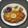
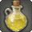
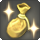
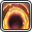
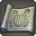

| Quest | Type | Level | Quest Giver | Unlocks | Rewards |
|---|---|---|---|---|---|
| Word about Komra | 70 | Gossipy Dwarf | 2 Paella 2  Ovim Cordon Bleu 2  Lemonade 2 Jellied Harcott 3  Nightworld Silver Piece |
||
| A Scandal in Komra | 80 | Gossipy Dwarf | |||
| On the Threshold | 80 | Dig Site Chief |  The Copied Factory | 1  Significance Orchestrion Roll |
|
| An Academic Dispute | 80 | Anogg | |||
| Tails, You Lose | 80 | Anogg | 1 Voice of no Return Orchestrion Roll |
||
| Heads, I Win | 80 | Konogg | 1 Voice of no Return Orchestrion Roll |
||
| Carnivals and Confrontations | 80 | Dig Site Chief | |||
| One Way to Do It | 80 | Anogg | 1 Crumbling Lies - Front Orchestrion Roll |
||
| We Can Rebuild Her | 80 | Dig Site Chief | 1 Amusement Park Orchestrion Roll |
||
| Everything You Know Is Wrong | 80 | Anogg | The Puppets' Bunker | ||
| Crime and Punishment | 80 | Konogg | 1 Broken Heart Orchestrion Roll |
||
| To Make Amends | 80 | Konogg | |||
| Konogg, Alone | 80 | Dig Site Chief | 1 Voice of no Return (Normal) Orchestrion Roll 1 The Color of Depression Orchestrion Roll |
||
| Brave New World | 80 | Dig Site Chief | The Tower at Paradigm's Breach | 1 Widespread Illness Orchestrion Roll 1 Possessed by Disease Orchestrion Roll 1 Faltering Prayer (Dawn Breeze) Orchestrion Roll |
|
| It Takes a Village | 80 | Dig Site Chief | |||
| Komra Wasn't Built in a Day | 80 | Dig Site Chief | |||
| All That Grinds Is Not Gloom | 80 | Doomsaying Dwarf | |||
| The Merchant of Komra | 80 | Dour Dwarf | |||
| How to Catch an Automaton | 80 | ||||
| Whence the Heart Leads | 80 | Dig Site Chief | 1 Weight of the World (Instrumental) Orchestrion Roll |